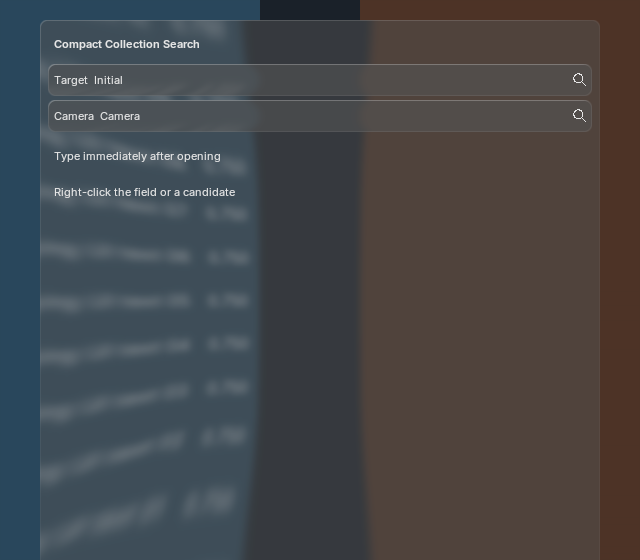
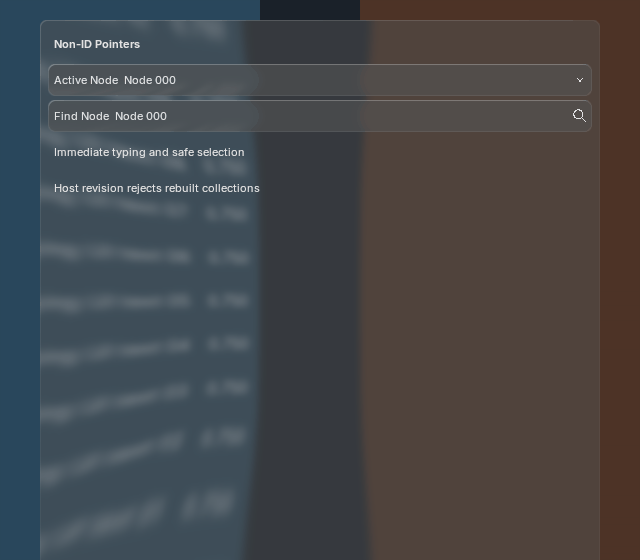
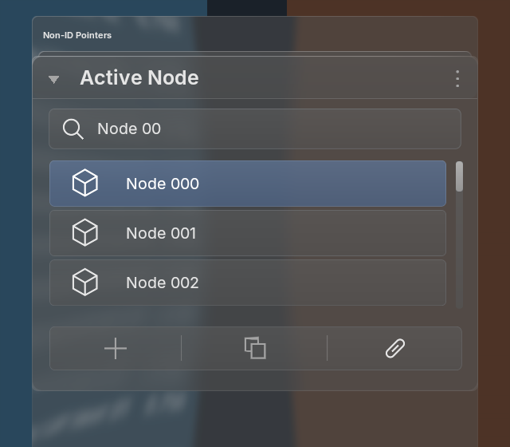
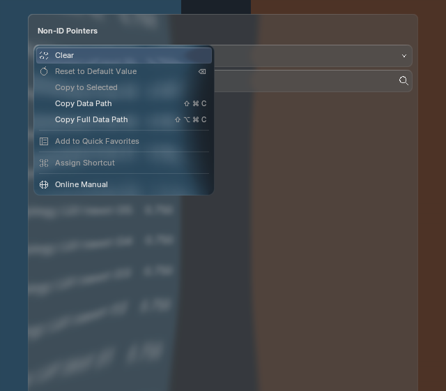

Active bones and nodes now use the same custom field, strong-glass picker, source spring and owner-aware menus as ID pointers. Both prop and prop_search support named non-ID targets through an explicit host candidate/poll policy and mandatory revision and transaction callbacks. RNA collection wrappers receive exact owner/path bindings.



Execution on Blender 5.1.2 and 5.2.2 covers Bone/Node assignment, rollback, revision changes, renames, removals, stale context actions, clear, copy paths and deletion of the owning ID. Real window input covers immediate typing, selection, candidate menus, compact search, cancellation and quiescent teardown. Rejected pointer commits preserve the editor. Candidate Copy Name now rechecks collection membership too.
Both versions retain one backdrop production, one strong blur, five offscreens and recorded layout/font/shader/batch identities. All 100 sampled frames per runtime match with native text batching enabled and disabled. No per-frame capture, blur or candidate scan is introduced.

Resting, open, filtered, context-menu and disabled snapshots all retain identical RGB pixels in the unchanged 5.2.2 fixture. Equivalent-workload timing records are retained; separate process runs are a regression check, not a controlled BVT performance comparison.
Parity remains partial. These are implementation captures using existing control geometry, not approved generated-reference matches. Native button-pointer callbacks for collection owners, unqualified setter side effects, type-specific icons, unnamed/nonassignable targets, unexposed polls without host adapters, eyedroppers/drag-drop, complete keyboard traversal, all theme/DPI states and platform validation remain open. Blender 4.2 was source-reviewed, not executed here.
5.2 non-ID capture/timings · 5.1 non-ID capture/timings · ID pixel comparison · 5.2 ID regression timings · 5.1 ID regression timings · RNA checks · Actual window input · Official source evidence · Integration and remaining gaps